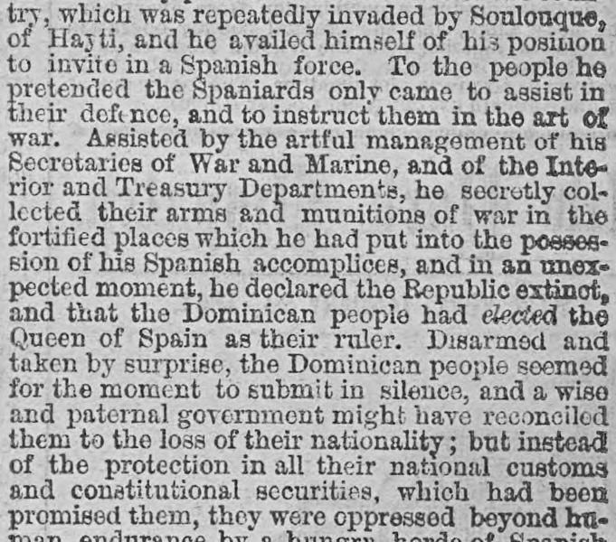
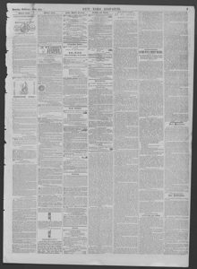

Assisted by the artful management of his Secretaries of War and MarineAsistido por la artificiosa gestión de sus secretarios de Guerra y
New York Dispatch. New York [N.Y.], January 24, 1864. Page 3. View the originalVer el original


See the full pageVer la página completaAccording to the newspaper, a leader deceived the Dominican people by inviting in Spanish forces under the guise of assistance and instruction, subsequently collecting their arms, declaring the Republic extinct, and proclaiming the Queen of Spain as ruler. After being oppressed by Spanish officials and failing twice in armed resistance, the Dominicans achieved victory on their third attempt, restoring their free constitution while retreating Spanish forces burned towns in vengeance. The report notes that the Spanish navy subsequently maintained a strict blockade of most of the seaboard with six thousand Spanish soldiers.Según el periódico, un caudillo engañó al pueblo dominicano llamando a las fuerzas españolas con el pretexto de ayuda e instrucción militar, para luego confiscarles el armamento, declarar extinguida la República y proclamar soberana a la reina de España. Tras padecer la opresión de los funcionarios coloniales y sucumbir en dos tentativas armadas, los dominicanos alcanzaron la victoria en su tercer alzamiento, restableciendo su constitución libre mientras las tropas españolas en retirada quemaban poblados por venganza. El informe agrega que la escuadra española impuso subsiguientemente un riguroso bloqueo sobre la mayor parte del litoral apoyada por seis mil soldados peninsulares.
FULL TEXT:TEXTO COMPLETO:
try, which was repeatedly invaded by Soulouque, of Hayti, and he availed himself of his position to invite in a Spanish force. To the people he pretended the Spaniards only came to assist in their defence, and to instruct them in the art of war. Assisted by the artful management of his Secretaries of War and Marine, and of the Interior and Treasury Departments, he secretly collected their arms and munitions of war in the fortified places which he had put into the possession of his Spanish accomplices, and in an unexpected moment, he declared the Republic extinct, and that the Dominican people had elected the Queen of Spain as their ruler. Disarmed and taken by surprise, the Dominican people seemed for the moment to submit in silence, and a wise and paternal government might have reconciled them to the loss of their nationality; but instead of the protection in all their national customs and constitutional securities, which had been promised them, they were oppressed beyond human endurance by a hungry horde of Spanishpaís, que fue repetidamente invadido por Soulouque, de Haití, y se aprovechó de su posición para invitar una fuerza española. Al pueblo pretendió que los españoles solo vinieron a asistir en su defensa, y a instruirlos en el arte de la guerra. Asistido por el manejo artificioso de sus Secretarios de Guerra y Marina, y de los Departamentos del Interior y Hacienda, secretamente recogió sus armas y municiones de guerra en los lugares fortificados que había puesto en posesión de sus cómplices españoles, y en un momento inesperado, declaró la República extinta, y que el pueblo dominicano había elegido a la Reina de España como su gobernante. Desarmado y tomado por sorpresa, el pueblo dominicano pareció por el momento someterse en silencio, y un gobierno sabio y paternal podría haberlos reconciliado con la pérdida de su nacionalidad; pero en vez de la protección en todas sus costumbres nacionales y seguridades constitucionales, que les habían sido prometidas, fueron oprimidos más allá de la resistencia humana por una horda hambrienta de españoles